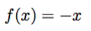
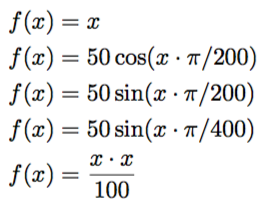

Funktionsgubbe
medel, sköldpaddsgrafik, trigonometriska funktioner- 1. Rita en streckgubbe
- 2. Vi inför en funktion
- 3. Flytta gubben så att halsen kommer i origo
- 4. Vi inför en funktion till, för armarna
- 5. Vi prövar en matematisk funktion
- 6. Vi ger gubben matematiska armar
- 7. Vi prövar andra funktioner
- 8. Funktion som parameter (avancerat)
I denna uppgift kommer du att träna på funktioner.
Koden i denna uppgift är provkörd på http://repl.it/languages/python-turtle (Python 2.7).
1. Rita en streckgubbe
Inför fortsättningen behöver vi programkod som ritar en streckgubbe utan armar. (Gubben kommer att få armar senare.)
Till att börja med behöver vi ett tomt program, som importerar turtle- och math-paketen och skapar en Turtle. Vi behöver även återanvända funktionen jumpTo från en tidigare uppgift. Vi kommer att ha nytta av den senare.
import turtle
import math
t = turtle.Turtle()
def jumpTo(x, y):
t.penup()
t.setpos(x,y)
t.pendown()
Lägg nu till rader i programmet som ritar gubbens ben, kropp och huvud.
Tips: Använd funktionerna t.right(...), t.forward(...), och t.left(...).
Kom ihåg att lösa uppgiften i delar. Börja exempelvis med ett av benen, och se till att det blir rätt. När det stämmer utökar du ditt program med ett ben till. På samma sätt fortsätter du med ett streck för kroppen. Om du hellre vill börja med huvudet går det naturligtvis också bra.
Möjlig lösning
Följande Python-program ritar en enkel streckgubbe med fyrkantigt huvud.
import turtle t = turtle.Turtle() t.setheading(225) t.forward(100) t.left(180) t.forward(100) t.right(90) t.forward(100) t.left(180) t.forward(100) t.right(45) t.forward(200) t.right(90) t.forward(50) t.left(90) for sida in range(3): t.forward(100) t.left(90) t.forward(50)
Uppdrag: Provkör programmet! Kontrollera att streckgubben (utan armar) ser rimlig ut.
2. Vi inför en funktion
Nu ska vi införa en funktion för att rita streckgubben. Denna funktion ska innehålla Python-satserna du skrev i föregående uppgift. Funktionen kan exempelvis heta gubbe:
import turtle
import math
t = turtle.Turtle()
def jumpTo(x, y):
# ... enligt tidigare
def gubbe():
# ... satserna för att rita gubben, enligt tidigare uppgift
Inför funktionen gubbe enligt ovan och använd dina Python-satser där.
Kom ihåg att satserna i funktionen måste vara indenterade (indragna) med ett par mellanslag, annars kommer inte Python-tolken att förstå att de har med gubbe att göra.
Uppdrag: Kör programmet. Varför ser du inte längre någon gubbe?
Lägg nu till en rad i ditt program som anropar funktionen gubbe.
Tips
Jämför med vimpel-exemplet i uppgiften Sköldpaddsgrafik om du är osäker.
Uppdrag: Kör programmet igen. Nu när anropet till funktionen gubbe är på plats ska gubben vara tillbaka, fortfarande utan armar.
3. Flytta gubben så att halsen kommer i origo
Lite senare kommer vi att rita armarna med hjälp av en matematisk funktion. Därför vill vi först flytta gubben så att dess hals hamnar i origo.
Uppdrag: Lägg till ett anrop till jumpTo i början av gubbe-funktionen så att gubbens hals hamnar i origo. Prova olika parametrar till jumpTo så du ser vilka koordinater som är lämpliga.
Tips: För att se var origo är kan du lägga till anropet jumpTo(0,0) efter anropet till gubben.
4. Vi inför en funktion till, för armarna
Vi kommer att pröva ett par olika sätt att rita gubbens armar. Först vill vi rita armarna som ett helt vanligt vågrätt streck.
Uppdrag: Lägg till en funktion armar som ritar armarna genom att dra ett streck från positionen (-100, 0) till (100, 0).
Tips! Använd jumpTo för att hoppa till (-100,0), t.setheading(0) för att sätta riktningen till 0 grader, dvs rakt åt höger, och sedan t.forward(...) för att rita strecket.
Provkör programmet. Vad händer?
Tips
Kom ihåg att funktionen armar måste anropas, precis som gubbe.
Om du tycker att armarna hamnar för högt eller för lågt, så justera positionen på gubben igen så det ser bra ut.
5. Vi prövar en matematisk funktion
Nu lägger vi streckgubben åt sidan en stund. Vi återkommer snart till den.
Istället ska vi införa en funktion till. Denna gång är det en funktion som, liksom matematiska funktioner, ger ett värde som resultat.
Vi börjar med den enkla funktionen

En sådan funktion skrivs i Python så här:
def f(x):
return -x
(Nyckelordet return talar om vilket värde funktionen skall returnera. De andra funktionerna vi skrivit tidigare har bara utfört kommandon, och inte räknat ut något resultat.)
Lägg till funktionen ovan i ditt program. Liksom tidigare händer det inget förrän funktionen anropas.
Vi ska snart använda funktionen till streckgubben, men först vill vi pröva den och se att den fungerar som vi förväntar oss.
Lägg därför till följande rader i ditt program (exempelvis sist):
print f(1), f(3), f(-5)
Uppdrag: kör programmet, inklusive raderna ovan. Klicka på fliken Console, där utskrifterna (print) hamnar. Stämmer de tre värdena för f(x)?
6. Vi ger gubben matematiska armar
Nu ska vi förändra funktionen armar, så att gubbens armar ritas genom att vi plottar funktionen f. För detta behöver vi återigen införa en hjälpfunktion. Funktionen plot nedan använder sköldpaddan för att placera en punkt på koordinaterna (x,y):
def plot(x, y):
jumpTo(x, y)
t.dot(1)
Uppdrag: Lägg till funktionen plot till ditt program. Ändra sedan funktionen armar så att den plottar funktionen f från 0 till 100, i stället för att rita ett streck.
Tips: För att plotta funktionen kan du använda en for-loop med en loop-variabel i:
for i in range(100):
plot(...)
Variabeln i får då värdena 0, 1, 2, 3, … (ett värde för varje varv i loopen). Vilka skall parametrarna vara till plot?
Lösning:
def armar():
for i in range(100):
plot(i, f(i))
Uppdrag: Kör programmet. Hur många armar har streckgubben? Kan du se hur armen motsvarar funktionen f(x)?
Tips: om du tycker det går för långsamt
Det är många punkter som ska plottas. Man kan snabba upp Turtle-grafiken genom att bara uppdatera fönstret (exempelvis) var 10:e gång. Stoppa in följande rad i ditt program, direkt efter raden t = turtle.Turtle():
t.getscreen().tracer(10)
Vi behöver tydligen ändra i programmet för att få med båda armarna. Just nu antar i ovan bara positiva värden.
Uppdrag: Ändra din for-sats så att i antar värden från -100 till 100. Använd range(-100, 100).
Nu ska gubben ha två armar, en som pekar uppåt, och en som pekar neråt. Kan du se att det är funktionen f(x) enligt ovan som avbildas?
7. Vi prövar andra funktioner
Vi skall nu prova att plotta lite fler funktioner genom att ändra på definitionen av f(x).
Uppdrag: använd din streckgubbe för att plotta följande funktioner, en i taget.

Tips:
I Python skrivs sin(x) som math.sin(x) och pi som math.pi. Detta förutsätter att man i början av programmet skrivit import math, som vi gjort.
Tips: Glöm inte att man måste använda nyckelordet return i Python-funktionen för att den skall returnera ett värde till anropet.
Uppdrag: Hitta på en egen funktion som du plottar som armar.
Tips: För att armarna skall hamna förnuftigt, så se till att funktionen är noll eller nära noll för x=0. Du kan göra print(f(0)) för att se vad funktionens värde är vid x=0.
Tips: Du kan också behöva skala funktionen så att värdena inte blir alldeles för stora (eller för små) vid slutet av armarna. Prova t.ex. med print(f(100)) för att se funktionens värde vid x=100. Prova att ändra funktionen genom att multiplicera eller dividera med 100 eller någon annan konstant för att få lagom stora värden.
8. Funktion som parameter (avancerat)
Uppgiften ovan löste du genom att ändra i din funktion f. Det vore praktiskt om man istället kunde ha många olika funktioner definierade, och därefter bara peka ut den önskade funktionen i anropet till armar.
Vi vill alltså ha en funktion armar som har en parameter. Parametern syftar i sin tur på den funktion som ska plottas. Om vår armar-funktion fungerar så, så kan den användas så här:
def g(x):
return x / 2.0
def h(x):
return 50 * math.exp(x / 100.0) - 50
gubbe()
armar(g) # plotta funktionen g
Här definieras ett par bra funktioner g och h, och därefter används armar för att plotta en av dem.
Uppdrag: ändra din funktion armar så att man kan använda en parameter enligt ovan.
Tips
I armar används namnet f för att bestämma vilken funktion som ska plottas. Låt f vara en parameter till armar, på samma sätt som x och y är parametrar till jumpTo.
Genom att ändra g till h ovan kan man nu enkelt välja vilken funktion som ska plottas.
Kommentar 1: Vid divisionerna i g och h används reella tal som 2.0 och 100.0 i stället för heltal 2 och 100. Det är för att Python 2.7 (som används för paddan) tolkar division mellan två heltal som heltalsdivision där resten försvinner. När t.ex. Python räknar ut 3/2 blir resultatet 1 (i stället för 1.5). Men när något av talen i divisionen är ett reellt tal, så blir resultatet också reellt. Så när Python räknar ut 3/2.0 blir resultatet 1.5, som vi förväntar oss.
Kommentar 2: Skall man vara riktigt noga så ger range(-100,100) värdena -100, -99, -98, … 97, 98, 99. Dvs för att plotta funktionen från -100 till 100 borde vi egentligen skriva range(-100, 101).